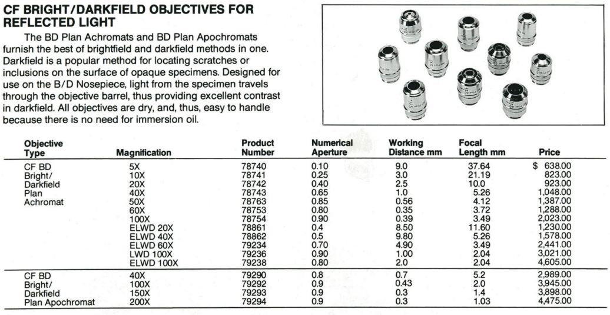
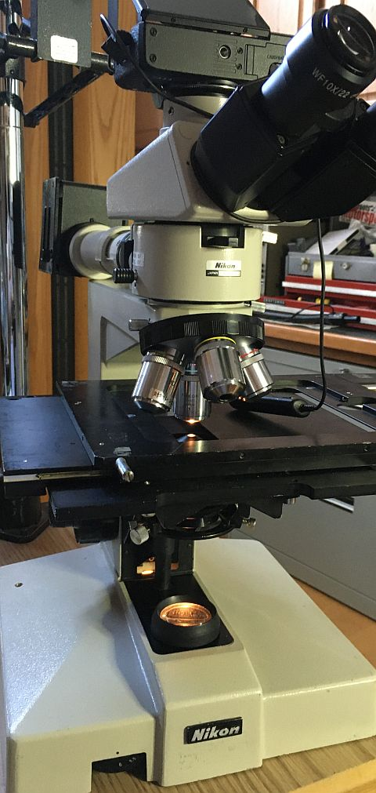

back

Nikon microscopes
While my first microscopes were American Optical Series 10s
(because cheap and plentiful in the U.S.),
they were also interesting because AO pioneered infinity correction.
That did not preclude also acquiring a massive
Nikon Apophot,
which used Nikon's highly popular
Model S optics.

That Apophot was too large to move from KY,
instead using AO/Reichert microscopes until concluding that:
their episcopic illumination was "not ideal"
larger than RMS objectives are wanted for sharp darkfield epi
fewer old optics in paths to camera sensors benefit contrast and sharpness.
210mm tube length
Interest in Nikon 210mm objectives was motivated by
macro photographers using CF M Plan objectives
relatively low cost and wide availability of Nikon microscopes with BD Plan objectives and vertical illuminators

which have M26x0.75 threads;
comparable Mitutoyo objectives
have M26x0.706 threads (36TPI, same as RMS).
Beware of incompatible M26x1 (robot lens) and M26x0.5 (Roedenstock Schneider enlarger lens shutter) threads...
While Nikon's newer infinity objectives are more highly rated,
they are also significantly more expensive, since still current technology.
Obvious frames for 210 BD objectives are Nikon's Optiphots,
which are more capable than contemporary Labophots.
Optiphot frames come in 4 flavors:
IC inspection (
-66, -77,
-88 and 150), of which 150 uses infinity optics
Optiphot-2, which are fairly famous for
fragile white plastic gears
Optiphot(-1), which used less plastic than Optiphot-2, but also 50W instead of 100W illumination
Although vertical illuminators are often installed on Optiphot-1 and -2,
IC inspection frames MAY have stronger gears and stages with more space to examine solid objects.
Optiphot-200 and -300, which (like 150) uses infinity objectives, but on frames more similar to Eclipse
- Condensers
- ELWD 0.3 Condenser
- Swing out
- Labophot 1
- LED conversion
- Metaphot, first CF 210mm tube length microscope
- Objectives
- Optiphot 1
- Optiphot 66
- 
- Base illumination
- curiosities
- Diascopic conversion
- Questions - Sure Squintsalot:
Part 1: polarizing
Part 2: fine focus, base
- Optiphot-66 DIC
- Phase Contrast-2 ELWD 0.3 turret
as Dark Field Turret
- Photo relay lenses
- Stages and crossed roller bearing rails
- Sliders
- Trinocular heads
- Universal Vertical Illuminator
-
- Nikon Optiphot Series Microscopes - lavinia.as.arizona.edu
- Optiphot-66/77/88 | Nikon Multiphot system - prc68.com